v38 作品写真を何ページかにする
決めていただいたこと：作品写真は何ページかにできる（いまは1ページ）。1ページは4枚まで（6枚の並べ方はなくす）。多いときは次のページへ。提出前チェックも同じ。
画面は本物のツールに、案の部分だけ書き足して写したものです（絵を押すと大きく見られます）。
3つの案から1つ選んでください。見本は、1ページ目に4枚、2ページ目に2枚（上下）、全部で6枚です。
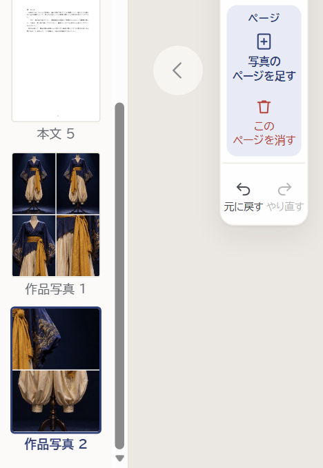
近くで：左の道具の「ページ」と、一覧の「作品写真 1・2」足したページは、前のページと同じ並べ方で始まります。
消したときは、下に「戻す」が出ます（下の絵）。1ページだけのときは、消せません。
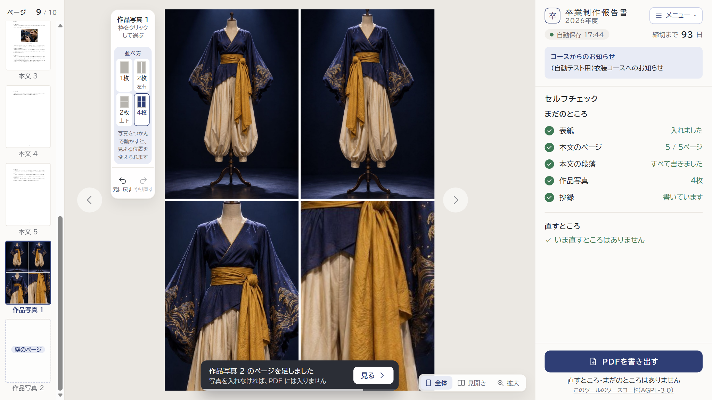
1ページ目の4枚目を入れたとき：一覧に「空のページ」、下に知らせ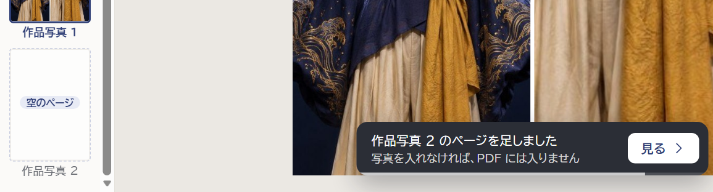
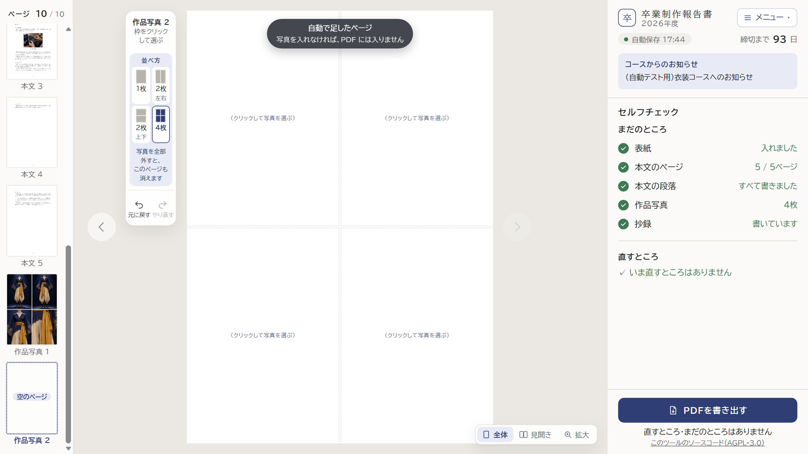
空のページを開いたとき。消し方：そのページの写真を全部外すと、ページも消えます（左の道具の説明）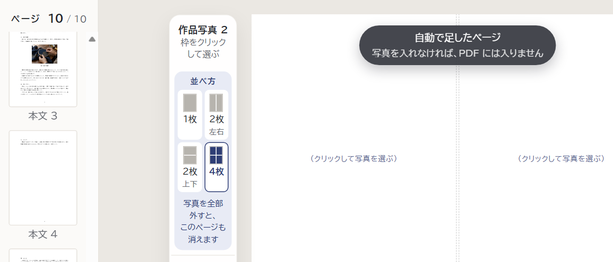
スマホの道具・セルフチェックの「まだのところ」・ページを消したとき・並べ方（6枚をなくしたあと）。
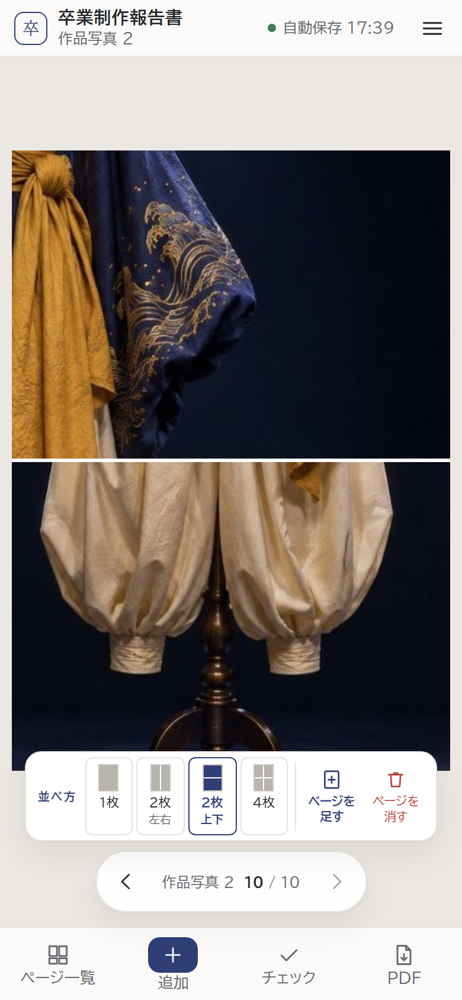
スマホ：2ページ目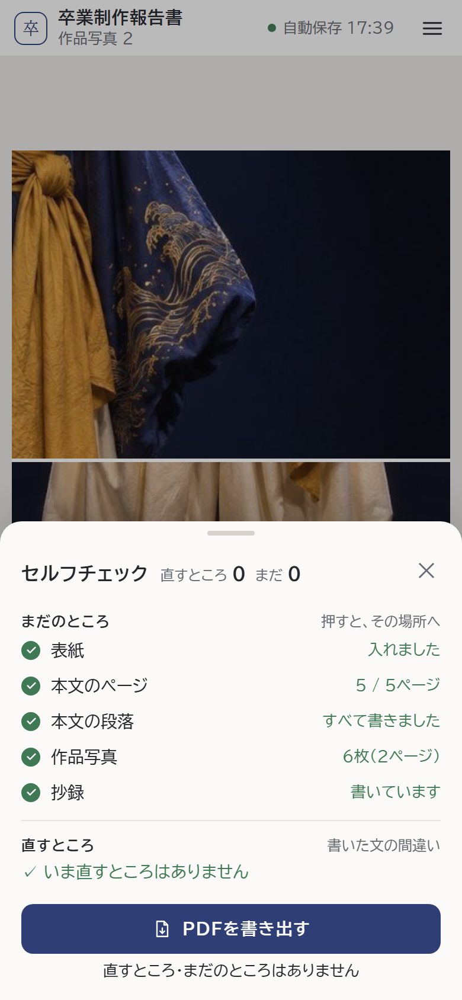
スマホ：チェック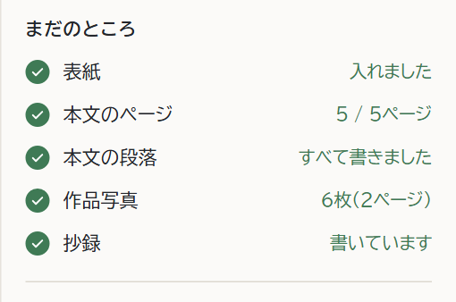
パソコン：「作品写真 6枚（2ページ）」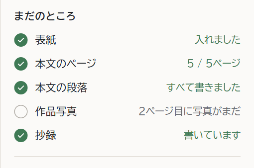
足したページが空のとき：灰色の ○「2ページ目に写真がまだ」（赤くしない）「このページを消す」を押したあと
1ページ目に戻り、下に「戻す」の知らせ。そのページの写真もいっしょに外れます。
1ページだけのときは、押せません（薄い字）。
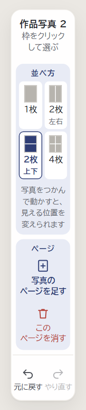
これから（案A）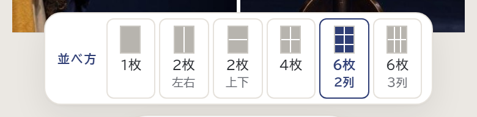
スマホ・いま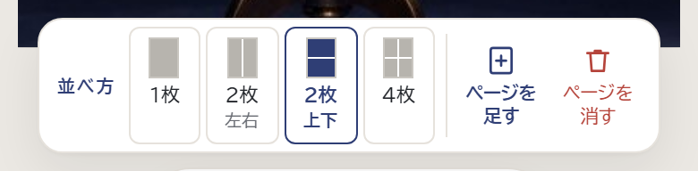
スマホ・これから（案A）言葉も変えます（案A）
使い方：「写真は6枚までです（手順書）」→
「1ページに4枚まで。多いときは「＋ 写真のページを足す」」
選びすぎたとき：「1ページ・6枚までです」→
「枠が足りないため、n枚は入れていません。「＋ 写真のページを足す」で次のページへ」
いまは6枚まで、1ページに並べます（5枚なら 2列×3段）。これからは1ページ4枚まで。5枚なら2ページです。
学生は並べ方を選びません（入れた順と枚数で決まります）。分け方を1つ選んでください。
| 作品写真の欄 | 写真 5枚（6枚まで） | 写真 5枚・2ページ（1ページ4枚まで） |
|---|---|---|
| 窓の上 | 5枚・6枚まで（A4 の1ページに並べます） | 5枚・2ページ（1ページに4枚まで） |
| 窓の中 | （区切りなし） | 「1ページ目」「2ページ目」 |
| 窓の下 | 並べ方は枚数で決まります。 | 4枚ずつ、この順にページに並べます。 |
| 入れすぎたとき | 作品写真は6枚までです。 | 作品写真は12枚（3ページ）までです。 |
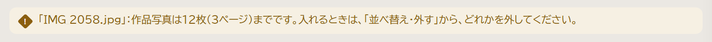
入れすぎたときの知らせ（上限が3ページのとき）